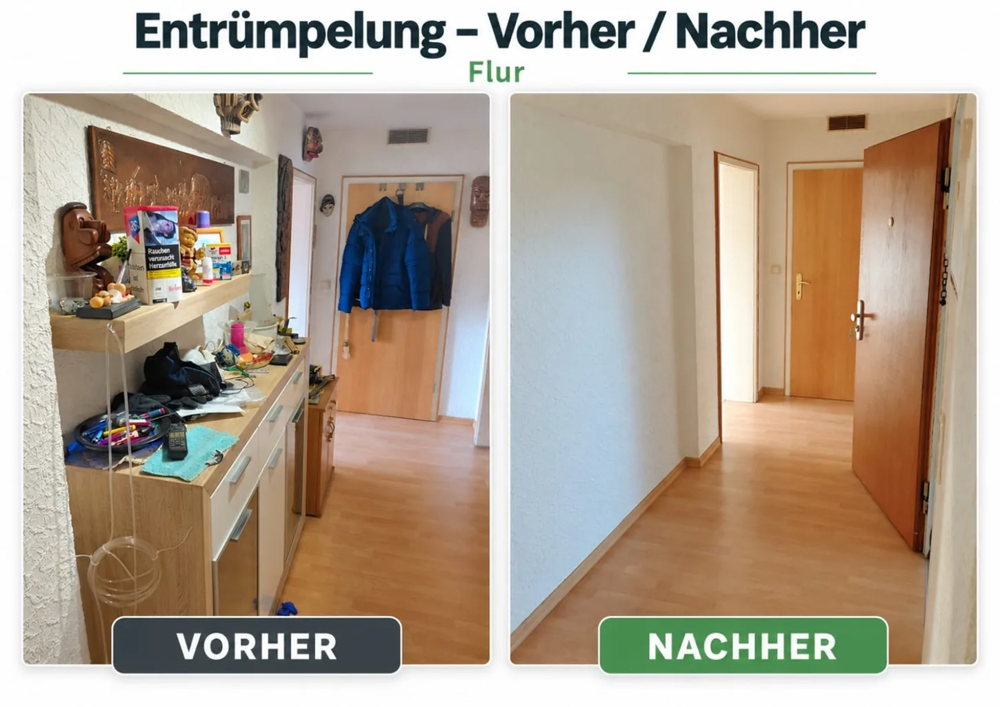

Wir übernehmen kleinere Entkernungs- und vorbereitende Rückbauarbeiten, abgestimmt auf Ihr Vorhaben. Für größere oder besondere Arbeiten prüfen wir den Umfang vor Ort.
Unverbindlich anfragen →Wir übernehmen kleinere Entkernungs- und vorbereitende Rückbauarbeiten, abgestimmt auf Ihr Vorhaben. Für größere oder besondere Arbeiten prüfen wir den Umfang vor Ort.

Für Entkernungsarbeiten zeigen wir hier bewusst keine fremden Referenzbilder. Fragen Sie Ihren konkreten Rückbau direkt bei uns an.
Ob einzelne Räume oder ein größeres Vorhaben: Schildern Sie uns kurz, was erledigt werden soll. Wir besprechen die nächsten Schritte persönlich.
Auch telefonisch erreichbar:
0157 81282383 · 0176 41165808
Schreiben Sie uns direkt per WhatsApp, E-Mail oder Telefon.
✉ E-Mail sendeninfo.schmidt-entkernung@web.de